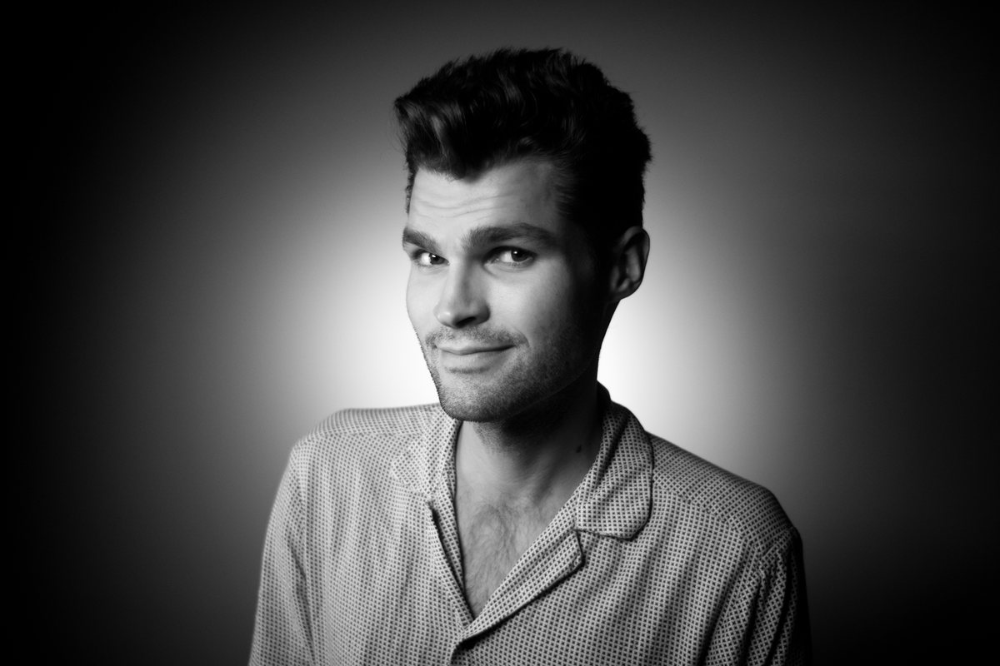
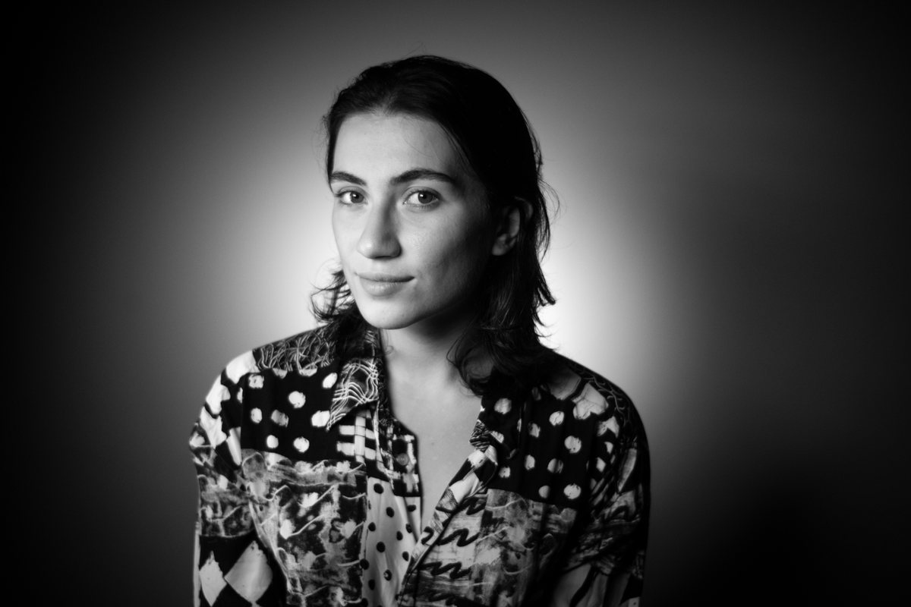

Dva pohledy, jeden štáb
On the Move Productions vznikla na Filmové akademii Miroslava Ondříčka v Písku, kde se Erik a Mariam potkali při studiu kamery a režie. Jeden z nás je Čech, druhá Arménka. Spojujeme dva pohledy, jeden štáb a společný instinkt pro to, jak dostat nápady do pohybu.

Erik Žila
Kameraman a hlavní osvětlovačErik Žila je absolventem katedry kamery na Filmové akademii Miroslava Ondříčka v Písku. Pracoval především jako hlavní osvětlovač a také asistoval u kamery na filmech, reklamách a televizních seriálech.
Erik má rád kreslení aut do okrajů sešitů. Má rád jízdu na motorce, protože věří, že je to jeden z nejvíce osvobozujících pocitů, které může člověk mít. Když uvidí brouka smradlavku, vždy ho zachrání. Každý z nich se pro něj jmenuje Franta.
Erik miluje pocit, když se z hromady nápadů, problémů a rozhovorů stane film. A miluje vědomí, že až se na ten film jednou znovu podívá, najde v něm stopu toho, kým jeho autoři v té době byli.

Mariam Mansuryan
RežisérkaMariam Mansuryan je absolventkou katedry filmové režie na Filmové akademii Miroslava Ondříčka v Písku. V České republice i v Arménii pracovala jako asistentka režie, skriptka a osvětlovačka.
Mariam má ráda chvíli, kdy se v kině zhasne a film může začít. Nemá ráda zvuky, které lidé během projekce vydávají. Po zhlédnutí Oppenheimera přísahala, že už nikdy nepůjde do IMAXu kvůli chroupání popcornu a nachos.
Mariam miluje, když jí filmový nápad převrátí svět vzhůru nohama. Najednou se každý člověk může stát postavou, každé místo filmovou lokací a každý zaslechnutý rozhovor kusem dialogu. Má pocit, jako by jí svět nechával malé stopy, které stačí jen posbírat a poskládat do příběhu.
Co nás žene dopředu
Řemeslo i logistika
Kreativní jiskru milujeme stejně jako harmonogram, díky kterému se dostane na plátno.
Společný instinkt
Dva pohledy, jeden štáb. Vždy hledáme příběh, který je přímo před námi.
Stopa toho, kým jsme byli
Každý dokončený film v sobě nese kousek lidí, kteří ho vytvořili. Chceme, aby to bylo vidět.
Erika a Mariam už znáte.
Žádný skrytý tým, žádné přehazování mezi lidmi. Na vašem projektu budou dělat přesně ti dva, které jste právě poznali.